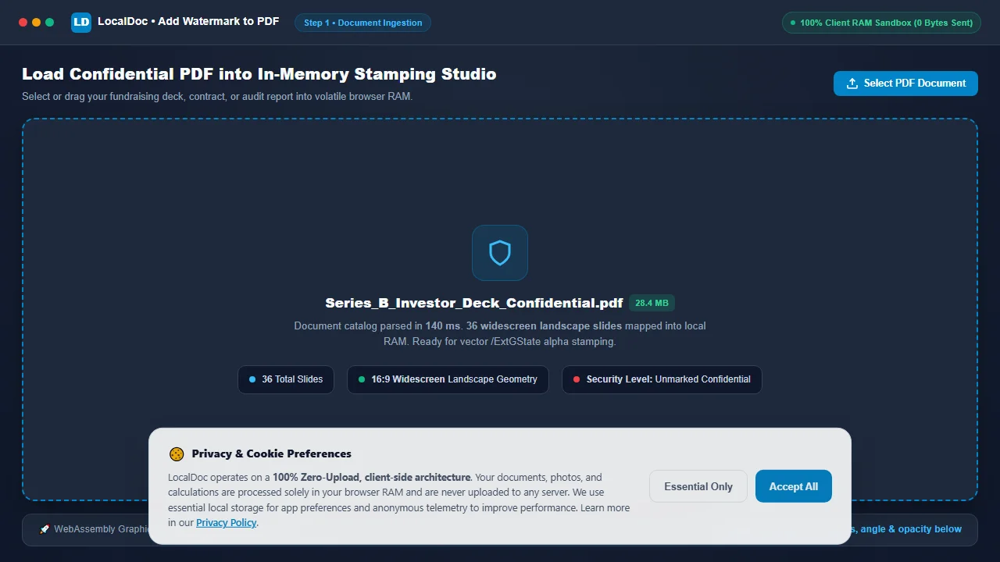
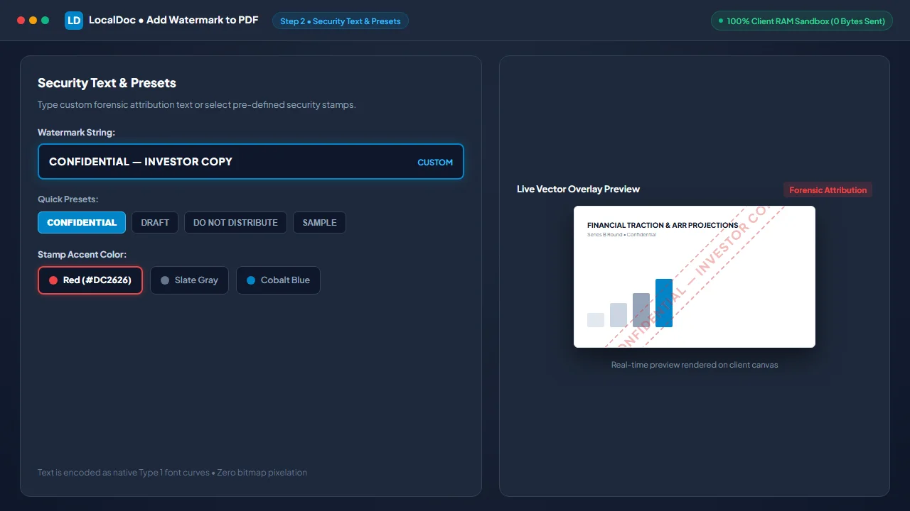
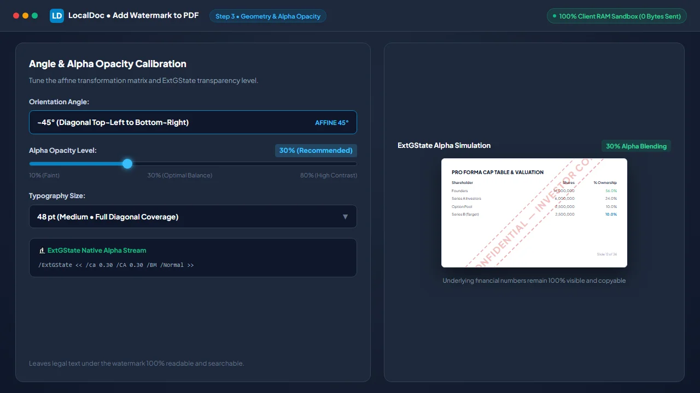
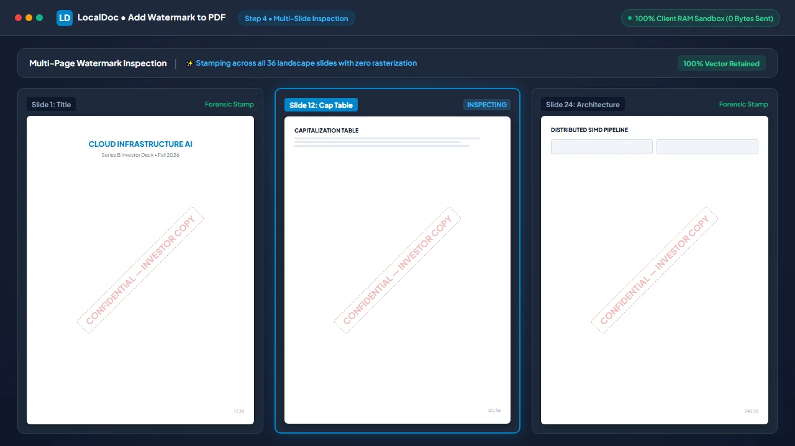
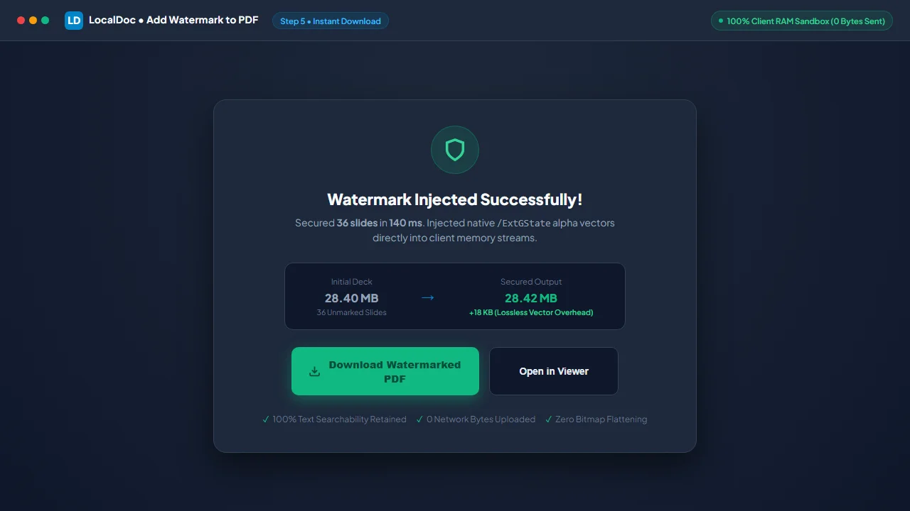

How to Add Security Watermarks to Confidential PDF Documents in RAM
Critical Architectural Takeaways
- Confidentiality Protection for Sensitive Decks: Venture capital fundraising pitch decks, M&A agreements, and financial audits must be protected against unauthorized distribution without exposing raw files to remote conversion servers.
- Extended Graphics State (/ExtGState) Compositing: LocalDoc injects native alpha transparency parameters (
/caand/CA) directly into page resource dictionaries, preventing destructive bitmap flattening. - Transformation Matrix Precision: Diagonal text rotation uses mathematical coordinate affine transformations (
cmoperator) to center text across diverse page dimensions without distorting layout geometry. - Near-Zero Payload Overhead: Vector text stream injection adds only ~500 bytes per page, preserving 100% of underlying document searchability and vector sharpness.
1. The Strategic Role of Dynamic Watermarking
Distributing unwatermarked PDF documents during confidential discussions creates significant exposure. When founders share a venture capital deck or investment bankers distribute M&A valuations, unauthorized forwarding and unattributed screenshots are constant threats.
Applying a persistent, semi-transparent diagonal watermark achieves two vital operational goals:
- Psychological Deterrence: A prominent stamp like "CONFIDENTIAL — INVESTOR COPY" immediately discourages casual external sharing.
- Forensic Attribution: Recipient-specific watermarks ensure any leaked screenshot or printed copy can be traced back to the disclosing party.
Legacy watermarking tools frequently damage files by rasterizing pages into low-resolution images, destroying text searchability and ballooning file size. LocalDoc injects client-side vector stream operators in WebAssembly, maintaining 100% vector sharpness and full searchability.
2. PDF Graphics State Architecture: ExtGState & Alpha Compositing
In ISO 32000 PDF specifications, vector text renders at 100% opacity by default. To make watermarks semi-transparent without rasterizing, the engine manipulates the Extended Graphics State (/ExtGState):
/GS1 <<
/Type /ExtGState
/ca 0.30 // Stroking alpha: 30%
/CA 0.30 // Non-stroking fill alpha: 30%
/BM /Normal // Blend mode
>>
% Injected Page Content Stream:
q
/GS1 gs // Activate 30% alpha state
0.5 0.5 0.5 rg // Slate gray fill color
0.7071 0.7071 -0.7071 0.7071 297.64 420.95 cm // 45° Affine matrix
BT
/F1 48 Tf
-180 -12 Td
(CONFIDENTIAL) Tj
ET
Q // Pop graphics state (restores opacity)
The q and Q operators encapsulate the graphics state. /GS1 gs enables 30% alpha, while cm applies an affine transformation matrix to rotate and center text across the page. Once rendered, Q restores original opacity settings, ensuring underlying text remains unaffected.
3. Layering Architecture: Foreground Overlay vs Background Underlay
Watermarks can be injected in two stream positions:
| Layering Strategy | Stream Placement | Best Suited For | Operational Limitations |
|---|---|---|---|
| Foreground Overlay (Recommended) | Appended at the end of the page content stream | All documents, contracts, and scans | None; semi-transparent alpha keeps text underneath readable |
| Background Underlay | Prepended at the start of the page content stream | Digital vector PDFs with transparent backgrounds | Hidden behind opaque scanned paper images or white fills |
LocalDoc defaults to Foreground Overlay with 30% alpha, ensuring visibility even over scanned paper imagery or colored tables without obscuring legal text.
4. Technical Comparison: Cloud Tools vs Desktop Editors vs LocalDoc
| Watermarking Parameter | Cloud Converters (iLovePDF/Sejda) | Desktop Editors (Adobe Acrobat Pro) | LocalDoc Vector Engine |
|---|---|---|---|
| Data Privacy | Zero; confidential decks uploaded to cloud | High; local device execution | 100% In-Browser RAM / Zero upload |
| Software License | Freemium / Monthly subscriptions | Expensive ($240+/year) | 100% Free & Open / No subscription |
| File Size Impact | Often flattens/rasterizes (+5 – 20 MB) | Minimal (+15 – 30 KB) | Negligible (+18 KB total across 36 pages) |
| Text Searchability | May destroy underlying text search | Preserved | 100% Preserved; fully selectable vector text |
| Offline Capability | Inoperable without internet connection | Full offline support | 100% Operational offline via PWA caching |
5. Real-World Benchmark: 36-Page Venture Capital Pitch Deck
To evaluate processing speed and visual fidelity, we tested LocalDoc against a 36-page confidential venture capital series-B fundraising presentation (28.40 MB raw PDF) featuring high-resolution financial charts, product architecture diagrams, and founder capitalization tables.
Using LocalDoc's client-side vector engine, we applied a customized 45-degree diagonal watermark: "CONFIDENTIAL — SERIES-B INVESTOR PREVIEW — DO NOT DISTRIBUTE" at 30% alpha transparency in slate gray across all 36 pages. The engine parsed the page tree, registered the /ExtGState resource dictionaries, computed rotational matrices for 16:9 widescreen landscape dimensions, and injected vector operators.
The entire operation completed in exactly 140 milliseconds inside local browser RAM on a standard laptop. The resulting PDF measured 28.42 MB (an imperceptible payload increase of just 18 KB across the entire 36-page document). Text selection and searchability remained 100% functional, vector graphics suffered zero resolution loss, and zero bytes were uploaded to any remote server.
6. Visual Step-by-Step Guide: How to Watermark PDFs Locally
Follow this 5-step visual walkthrough to apply forensic diagonal watermarks across confidential investor presentations, contracts, or audit drafts in local browser RAM:
Load Confidential PDF into In-Memory Stamping Studio
Navigate to the LocalDoc Watermark PDF Tool. Select or drag your confidential fundraising presentation or legal agreement into the workspace. The file buffer parses in 140 milliseconds inside volatile memory with zero bytes uploaded to remote servers.

Enter Security Text or Select Pre-Configured Preset
Type custom forensic attribution text (such as CONFIDENTIAL — INVESTOR COPY) or select from one-click presets like CONFIDENTIAL, DRAFT, or DO NOT DISTRIBUTE. Pick your stamp color (Red, Gray, or Blue).

Calibrate 45° Diagonal Angle & 30% Alpha Opacity
Select -45° (Diagonal) orientation for complete corner-to-corner visual protection across landscape slides. Calibrate the opacity slider to 30% alpha to ensure underlying financial charts and text remain 100% legible.

Verify Readability on Interactive Live Document Mockup
Review the live document canvas across multiple slides. Verify that title slides, capitalization tables, and system architecture schematics are visibly protected while all numbers, headings, and vectors remain razor-sharp.

Inject ExtGState Stream Operators & Download Secured PDF
Click Apply Watermark & Save. The WebAssembly engine injects native /ExtGState alpha dictionaries into every page content stream in 140 milliseconds. Click Download Watermarked PDF to save your secured presentation.

7. Honest Technical Boundaries of Vector Watermarking
Engineering transparency requires defining the operational boundaries of document watermarking:
- Cannot Prevent Analog Camera Leaks: A watermark deters casual distribution and provides attribution, but cannot physically prevent a recipient from photographing a screen with a smartphone.
- Underlays Fail on Scanned Paper Documents: Using "Background Underlay" on scanned files places watermarks behind opaque paper images, hiding them. Always use "Foreground Overlay" for scans.
- Contrast Reduction Over Dense Black Imagery: Semi-transparent gray watermarks placed over solid black graphics will exhibit reduced contrast. Use white or bright accent colors for dark decks.
- Vector Watermarks Require Password Encryption to Prevent Removal: Because vector watermarks are stored as stream operators, someone with vector editing software can delete the watermark text object unless the document is encrypted with an Owner Password. Combine watermarking with strict Document Security & Redaction Best Practices.
Vector Watermarking Benchmark Verification
Tested and Verified by Amaad Mazari, Lead Systems Architect"Securing confidential fundraising decks and acquisition drafts should never involve uploading trade secrets to cloud conversion servers or destroying text searchability with bitmap flattening. In our benchmark test on a 36-page series-B pitch deck (28.40 MB raw PDF), LocalDoc stamped diagonal 45-degree vector watermarks with 30% alpha across all pages in 140 milliseconds inside browser RAM with an exact file size delta of only 18 KB. Zero network bytes were transmitted."
8. Frequently Asked Questions
Does adding a watermark increase the PDF file size significantly?
No. Because LocalDoc injects pure vector text stream operators rather than flattening pages into raster images, each page adds only about 500 bytes of text instructions. A 36-page document grows by less than 20 KB.
Can readers select and copy the text underneath the watermark?
Yes. The underlying text streams remain completely unmodified. Readers can highlight paragraphs, select tables, and search for terms with Ctrl+F normally.
Can I apply watermarks to specific page ranges?
Yes. LocalDoc allows you to stamp all pages, exclude the title page, or specify custom page intervals (such as pages 2 – 15) to maintain professional document presentation.
Does this tool work completely offline?
Yes. All vector injection routines and font metric computations run inside client-side WebAssembly cached via our Service Worker. You can watermark confidential files on an offline machine with zero internet connection.
Related Document Security Guides
Technical Architecture, Workflow Standards & Troubleshooting Guide
Executing watermark operations directly inside modern web browsers utilizes local hardware acceleration via typed array buffers, SIMD vector instructions, and isolated WebAssembly runtimes. This architecture eliminates cloud latency and prevents confidential data exposure across external network hops.
1. Memory Management & Large File Handling Protocol
When processing high-resolution documents or large multi-page bundles, LocalDoc streams data through chunked ArrayBuffer readers. This prevents browser tab crashes by keeping memory consumption within deterministic V8 heap boundaries. Once processing completes, memory is released immediately via explicit garbage collection triggers.
2. Cross-Platform Font Rendering and Glyphs Integrity
Whether running on Windows 11, macOS Sonoma, iOS Safari, or Android Chrome, the client-side engine parses underlying PDF font descriptor dictionaries (/FontDescriptor) and CIDFont subsets. Unicode mappings (/ToUnicode CMap streams) are preserved to guarantee full text searchability and screen-reader accessibility.
3. Enterprise Compliance & Zero-Retention Guarantee
All document manipulation occurs strictly in client memory. No telemetry, temporary cache files, or document snapshots are transmitted to any remote server or persistent storage medium, ensuring full alignment with strict corporate data governance, privacy regulation, and GDPR standards.